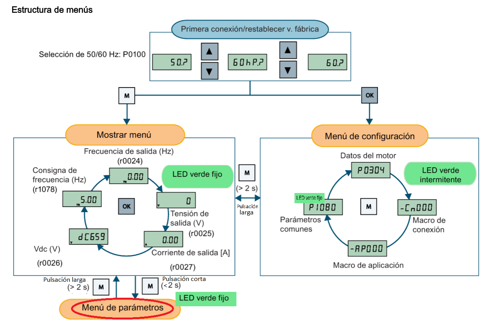

EJERCICIOS
FUENTE: FIGURA MODIFICADA, EXTRAIDA DEL MANUAL DE PRIMEROS PASOS DE SIEMENS.
Primeros pasos 22 páginas
Manual de completo 332 páginas
CONTENIDO
Para pasar de modo visualización a modo parametros pulsación larga en Fn
Para poner en funcionamiento el variador el parametro P10=0 preparado.
Para
visualizar la frecuencia de funcionamiento ó trabajar con BOP, debemos
de estar en la primera opción modo parámetros r000 y pulsar P para ver
la frecuencia de funcionamiento., para llegar a él rapidamente
estando en otro parametro, realizo una pulsación corta sobre Fn
accedemos rapidamente a
r000.
Variador de velocidad, MICROMASTER 420
1º.- AJUSTES DE FABRICA, Realizar la primera puesta en marcha del variador de velocidad, con los parámetros indicados en la placa de características del motor.
Para ello en primer lugar reseteamos el variador y posteriormente comprobamos parámetros.
Mostrar solución
2º.- CONTROL ANALOGICO, MARCHA – PARO EXTERNO. Realizar el control del motor a través del variador con las entradas (Terminal). De las entradas, la primera entrada el motor arranca en sentido horario, con el pulsador 2 arranca en sentido contrario, si se desactiva el pulsador 3 realiza una parada natural.
Comprueba:
Ademas de comprobar el fucionamiento del enunciado vamos a probar los siguientes casos.
Si pulso P1 y luego P2 el motor gira en sentido horario
Si pulso P2 y luego P1 el motor gira en sentido antihorario
Si desactivo P3, luego activo P1 y luego activo P3, el motor no arranca.
Mostrar solución
3º.- JOG.- funcionamiento del motor: con el pulsador 1 el motor arranca en sentido horario y puedo modificar la frecuencia de 0 a 50 Hz con el potenciometro, con el pulsador 2 el motor funciona en modo mantenimiento "JOG" a derechas con frecuencia de 5Hz.
La salida digital del terminal (luz roja) deberá encenderse con el motor en marcha
Comprueba:
Si pulso P1 y luego P2
Si pulso P2 y luego P1
Pulso P1 y muevo el potenciometro
Pulso P2 y muevo el potenciometro.
Mostrar solución
4º.- CONTROL POR FRECUENCIAS FIJAS, MARCHA - PARO EXTERNO. Utilizar las entradas digitales para seleccionar dos frecuencias fijas una de 10Hz y otra de 15Hz:
Entrada 1 ® Arranque con frecuencia mínima de 5Hz
Entrada 2 ® frecuencia de 10Hz
Entrada 3 ® frecuencia de 15Hz
Mostrar solución
5º.- Con las frecuencias anteriores todos los switch (interruptor), ponen en ON el variador
Mostrar solución
6º.- Añadir una cuarta entrada analógica (potenciómetro del terminal), limitar la frecuencia máxima a 45HZ
Mostrar solución
7º.- POTENCIOMETRO MOTORIZADO. . Realizar el control del motor a través del variador con las entradas digitales y el MOP (potenciómetro motorizado). De las entradas digitales, una servirá para marcha, otra para subir frecuencias y la tercera para bajar frecuencias.
Mostrar solución
8º.- PROGRAMAR 7 VELOCIDADES, con un incremento de 5Hz sin sumarse. Para ello utilizaremos combinaciones de los switch de entrada (código BCD).
Mostrar solución
9º.- TIEMPO DE ACELERACION. Reseteamos el sistema, e introducimos:
Frecuencia máxima ® 45Hz
Tiempo de aceleración en segundos ® 15 segundos
Comprobamos
Mostrar solución
10º.- FRENADO POR INYECCIÓN DE CORRIENTE CONTINUA. Realizar el control del motor a través del variador con las entradas digitales con frenado por una inyección de corriente continua del 100% de la intensidad nominal del motor.
Realizar nuevamente el frenado con una inyección del 45%.
¿Qué diferencia existe entre los dos frenados?
Mostrar solución
11º.- FRENO DE MANTENIMIENTO. Comprobar el funcionamiento del freno de mantenimiento con los siguientes parámetros:
Retardo de apertura y retardo de cierre del freno 2sg
Frecuencia máxima 45Hz
Frecuencia mínima 5Hz
Mostrar Solución
Practicas variadores.
Descarga en ejercicio en PDFRealizar las siguientes configuraciones con el variador de Velocidad. Micromaster 420 . Indica los valores de los parámetros que hay que poner.
Los ejercicios son independientes, resetea el variador siempre que sea necesario. No es necesario indicar las variaciones en el parámetro P0003
1.- Se quiere realizar el control de un motor a través de un variador. Queremos tener una frecuencia mínima de funcionamiento de 10 Hz, una máxima de 40 Hz, un tiempo de aceleración de 4 segundos y un tiempo de deceleración de 7 segundos. De las entradas digitales, una servirá para la marcha, otra para inversión de giro y otra para paro.
2.- Se quiere realizar la puesta en marcha, paro y cambio de sentido desde el panel BOP, pero que la consigna de frecuencia se haga desde la entrada analógica
3.- Se quiere realizar la marcha, paro y cambio de sentido desde las entradas digitales, pero la regulación de velocidad desde el panel BOP.
4.- Queremos trabajar con frecuencias fijas con nuestro variador de velocidad. Queremos que la entrada 1 sea una entrada de activación, que con la entrada 2 el motor funcione a 15 Hz, y con la entrada 3 funcione a 35 Hz, además que si las entradas 2 y 3 están activadas, que funcione a 50 Hz (suma de las dos anteriores). Para que el motor funcione, es necesario que la entrada 1 esté activa, sino, permanece parado.
5.- Queremos que un motor gire en dos sentidos, con regulación de velocidad en ambos sentidos, a derechas de 35 Hz y a izquierdas de 20 Hz. El sentido se indicará con dos entradas digitales, la activación de número 2 querrá indicar giro a izquierdas, y la de la número 3 giro a derechas.
6.- Configurar el variador para gobernarlo desde las entradas digitales. Con la entrada 1 lo ponemos en marcha, cada vez que activemos el pulsador dos se aumenta la frecuencia en 0,1HZ y cada vez que activemos la entrada tres se reduzca la frecuencia en 0,1Hz
Al arrancar el motor deberá girar a 15 Hz
7.- Queremos tener unas frecuencias fijas de funcionamiento del motor de 7, 16, 27, 23, 34, 43 y 50 Hz, haciendo que las entradas 1 a 3 funcionen de forma codificada en BCD.
Dibuja la tabla que relaciona las distintas combinaciones de las entradas, con los valores en la salida
8.- Realizar el control del motor a través del variador con las entradas digitales con frenado por una inyección de corriente continua del 100% de la intensidad nominal del motor.
Entrada 1 giro a derechas, entrada 2 JOG a izquierda a 7Hz, entrada 3 freno.
Cuando funcione el motor se deberá activar la salida digital
9.- Comprobar el funcionamiento del freno de mantenimiento con los siguientes parámetros:
Retardo de apertura ® 3sg
Retardo de cierre del freno ® 2sg
Frecuencia máxima ® 45Hz
Frecuencia mínima ® 8Hz
Dibuja la grafica frecuencia- tiempo, para estos parámetros. Indicando el punto de ON y de OFF del interruptor